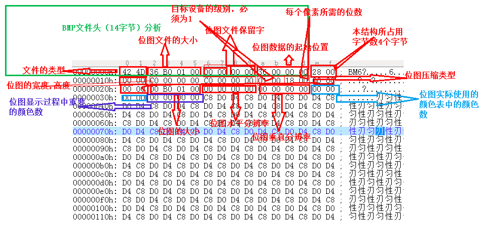

BMP图片分析
文件格式
格式组成
典型的BMP图像文件由四部分组成：
位图头文件数据结构，它包含BMP图像文件的类型、显示内容等信息；
位图信息数据结构，它包含有BMP图像的宽、高、压缩方法，以及定义颜色等信息；
调色板，这个部分是可选的，有些位图需要调色板，有些位图，比如真彩色图（24位的BMP）就不需要调色板；
位图数据，这部分的内容根据BMP位图使用的位数不同而不同，在24位图中直接使用RGB，而其他的小于24位的使用调色板中颜色索引值。
格式类型
位图一共有两种类型，即：设备相关位图（DDB）和设备无关位图（DIB）。DDB位图在早期的Windows系统（Windows 3.0以前）中是很普遍的，事实上它也是唯一的。然而，随着显示器制造技术的进步，以及显示设备的多样化，DDB位图的一些固有的问题开始浮现出来了。比如，它不能够存储（或者说获取）创建这张图片的原始设备的分辨率，这样，应用程序就不能快速的判断客户机的显示设备是否适合显示这张图片。为了解决这一难题，微软创建了DIB位图格式。
设备无关位图 (Device-Independent Bitmap)
DIB位图包含下列的颜色和尺寸信息：
原始设备（即创建图片的设备）的颜色格式。
原始设备的分辨率。
原始设备的调色板
一个位数组，由红、绿、蓝（RGB）三个值代表一个像素。
一个数组压缩标志，用于表明数据的压缩方案（如果需要的话）。
以上这些信息保存在BITMAPINFO结构中，该结构由BITMAPINFOHEADER结构和两个或更多个RGBQUAD结构所组成。BITMAPINFOHEADER结构所包含的成员表明了图像的尺寸、原始设备的颜色格式、以及数据压缩方案等信息。RGBQUAD结构标识了像素所用到的颜色数据。
DIB位图也有两种形式，即：底到上型DIB(bottom-up），和顶到下型DIB(top-down）。底到上型DIB的原点（origin）在图像的左下角，而顶到下型DIB的原点在图像的左上角。如果DIB的高度值（由BITMAPINFOHEADER结构中的biHeight成员标识）是一个正值，那么就表明这个DIB是一个底到上型DIB，如果高度值是一个负值，那么它就是一个顶到下型DIB。注意：顶到下型的DIB位图是不能被压缩的。
位图的颜色格式是通过颜色面板值（planes）和颜色位值（bitcount）计算得来的，颜色面板值永远是1，而颜色位值则可以是1、4、8、16、24、32其中的一个。如果它是1，则表示位图是一张单色位图（译者注：通常是黑白位图，只有黑和白两种颜色，当然它也可以是任意两种指定的颜色），如果它是4，则表示这是一张VGA位图，如果它是8、16、24、或是32，则表示该位图是其他设备所产生的位图。如果应用程序想获取当前显示设备（或打印机）的颜色位值（或称位深度），可调用API函数GetDeviceCaps（），并将第二个参数设为BITSPIXEL即可。
显示设备的分辨率是以每米多少个像素来表明的，应用程序可以通过以下三个步骤来获取显示设备或打印机的水平分辨率：
调用GetDeviceCaps（）函数，指定第二个参数为HORZRES。
再次调用GetDeviceCaps()函数，指定第二个参数为HORZSIZE。
用第一个返回值除以第二个返回值。即：GetDeviceCaps(hDC,HORZRES)/GetDeviceCaps(hDC,HORZSIZE);
应用程序也可以使用相同的三个步骤来获取设备的垂直分辨率，不同之处只是要将HORZRES替换为VERTRES，把HORZSIZE替换为VERTSIZE，即可。
调色板是被保存在一个RGBQUAD结构的数组中，该结构指出了每一种颜色的红、绿、蓝的分量值。位数组中的每一个索引都对应于一个调色板项（即一个RGBQUAD结构），应用程序将根据这种对应关系，将像素索引值转换为像素RGB值（真实的像素颜色）。应用程序也可以通过调用GetDeviceCaps（）函数来获取当前显示设备的调色板尺寸（将该函数的第二个参数设为NUMCOLORS即可）。
Win32 API支持位数据的压缩（只对8位和4位的底到上型DIB位图）。压缩方法是采用运行长度编码方案（RLE），RLE使用两个字节来描述一个句法，第一个字节表示重复像素的个数，第二个字节表示重复像素的索引值。有关压缩位图的详细信息请参见对BITMAPINFOHEADER结构的解释。
应用程序可以从一个DDB位图创建出一个DIB位图，步骤是，先初始化一些必要的结构，然后再调用GetDIBits（）函数。不过，有些显示设备有可能不支持这个函数，你可以通过调用GetDeviceCaps（）函数来确定一下（GetDeviceCaps（）函数在调用时指定RC_DI_BITMAP作为RASTERCAPS的标志）。
应用程序可以用DIB去设置显示设备上的像素（译者注：也就是显示DIB），方法是调用SetDIBitsToDevice（）函数或调用StretchDIBits（）函数。同样，有些显示设备也有可能不支持以上这两个函数，这时你可以指定RC_DIBTODEV作为RASTERCAPS标志，然后调用GetDeviceCaps（）函数来判断该设备是否支持SetDIBitsToDevice（）函数。也可以指定RC_STRETCHDIB作为RASTERCAPS标志来调用GetDeviceCaps（）函数，来判断该设备是否支持StretchDIBits（）函数。
如果应用程序只是要简单的显示一个已经存在的DIB位图，那么它只要调用SetDIBitsToDevice（）函数就可以。比如一个电子表格软件，它可以打开一个图表文件，在窗口中简单的调用SetDIBitsToDevice（）函数，将图形显示在窗口中。但如果应用程序要重复的绘制位图的话，则应该使用BitBlt（）函数，因为BitBlt（）函数的执行速度要比SetDIBitsToDevice(）函数快很多。
设备相关位图 (Device-Dependent Bitmaps)
设备相关位图（DDB）之所以现在还被系统支持，只是为了兼容旧的Windows 3.0软件，如果程序员现在要开发一个与位图有关的程序，则应该尽量使用或生成DIB格式的位图。
DDB位图是被一个单个结构BITMAP所描述，这个结构的成员标明了该位图的宽度、高度、设备的颜色格式等信息。
DDB位图也有两种类型，即：可废弃的（discardable)DDB和不可废弃的（nondiscardable)DDB。可废弃的DDB位图就是一种当系统内存缺乏，并且该位图也没有被选入设备描述表（DC）的时候，系统就会把该DDB位图从内存中清除（即废弃）。不可废弃的DDB则是无论系统内存多少都不会被系统清除的DDB。API函数CreateDiscardableBitmap（）函数可用于创建可废弃位图。而函数CreateBitmap（）、CreateCompatibleBitmap（）、和CreateBitmapIndirect（）可用于创建不可废弃的位图。
应用程序可以通过一个DIB位图而创建一个DDB位图，只要先初始化一些必要的结构，然后再调用CreateDIBitmap（）函数就可以。如果在调用该函数时指定了CBM_INIT标志，那么这一次调用就等价于先调用CreateCompatibleBitmap（）创建当前设备格式的DDB位图，然后又调用SetDIBits（）函数转换DIB格式到DDB格式。（可能有些设备并不支持SetDIBits(）函数，你可以指定RC_DI_BITMAP作为RASTERCAPS的标志，然后调用GetDeviceCaps（）函数来判断一下）。
对应数据结构
一、BMP文件组成
BMP文件由文件头、位图信息头、颜色信息和图形数据四部分组成。
| BMP文件由文件头(14个字节) | 位图信息头(40个字节) | 颜色信息 | 图形数据 |
|---|
1.BMP文件头（14字节）
BMP文件头数据结构含有BMP文件的类型、文件大小和位图起始位置等信息。
其结构定义如下：
typedef struct tagBITMAPFILEHEADER
{
WORD bfType; // 位图文件的类型，必须为BM(1-2字节）
DWORD bfSize; // 位图文件的大小，以字节为单位（3-6字节）
WORD bfReserved1; // 位图文件保留字，必须为0(7-8字节）
WORD bfReserved2; // 位图文件保留字，必须为0(9-10字节）
DWORD bfOffBits; // 位图数据的起始位置，以相对于位图（11-14字节）
// 文件头的偏移量表示，以字节为单位
} BITMAPFILEHEADER;
bfOffBits数据是3600 0000
像素的十六进制 3600 0000 -> 0000 0036h
从文件开始到位图数据之间的偏移量(14+40+4*（2^biBitCount）)。3600 0000，为00000036h = 54，上面的文件头就是35字=54字节。
2.位图信息头（40字节）
BMP位图信息头数据用于说明位图的尺寸等信息。
typedef struct tagBITMAPINFOHEADER{
DWORD biSize; // 本结构所占用字节数（15-18字节）
LONG biWidth; // 位图的宽度，以像素为单位（19-22字节）
LONG biHeight; // 位图的高度，以像素为单位（23-26字节）
WORD biPlanes; // 目标设备的级别，必须为1(27-28字节）
WORD biBitCount;// 每个像素所需的位数，必须是1（双色），（29-30字节）
// 4(16色），8(256色）或24（真彩色）,32之一
DWORD biCompression; // 位图压缩类型，必须是 0（不压缩），（31-34字节）
// 1(BI_RLE8压缩类型）或2(BI_RLE4压缩类型）之一
DWORD biSizeImage; // 位图的大小，以字节为单位（35-38字节）
LONG biXPelsPerMeter; // 位图水平分辨率，每米像素数（39-42字节）
LONG biYPelsPerMeter; // 位图垂直分辨率，每米像素数（43-46字节)
DWORD biClrUsed;// 位图实际使用的颜色表中的颜色数（47-50字节）
DWORD biClrImportant;// 位图显示过程中重要的颜色数（51-54字节）
} BITMAPINFOHEADER;

3.颜色表
颜色表用于说明位图中的颜色，它有若干个表项，每一个表项是一个RGBQUAD类型的结构，定义一种颜色。RGBQUAD结构的定义如下：
typedef struct tagRGBQUAD {
BYTE rgbBlue;// 蓝色的亮度（值范围为0-255)
BYTE rgbGreen; // 绿色的亮度（值范围为0-255)
BYTE rgbRed; // 红色的亮度（值范围为0-255)
BYTE rgbReserved;// 保留，必须为0
} RGBQUAD;
颜色表中RGBQUAD结构数据的个数有biBitCount来确定：
- 当biBitCount=1,4,8时，分别有2,16,256个表项；
- 当biBitCount=24时，没有颜色表项。
4.位图数据内容
位图数据记录了位图的每一个像素值，记录顺序是在扫描行内是从左到右,扫描行之间是从下到上。位图的一个像素值所占的字节数由biBitCount来确定:
- 当biBitCount=1时，8个像素占1个字节;
- 当biBitCount=4时，2个像素占1个字节;
- 当biBitCount=8时，1个像素占1个字节;
- 当biBitCount=24时,1个像素占3个字节;
Windows规定一个扫描行所占的字节数必须是4的倍数(即以long为单位),不足的以0填充。
例如：
24Bit真彩图每一行占的实际字节数：
nBytesPerLine =[(bi.biWidth*3+3)/4*4 // bi.biWidth为图像宽度
灰度图每一行占的实际字节数：
nBytesPerLine = ((bi.biWidth+3)/4)*4
位图信息头和颜色表组成位图信息，BITMAPINFO结构定义如下：
typedef struct tagBITMAPINFO {
BITMAPINFOHEADER bmiHeader; // 位图信息头
RGBQUAD bmiColors[1]; // 颜色表
} BITMAPINFO;
5.位图数据
位图数据记录了位图的每一个像素值，记录顺序是在扫描行内是从左到右，扫描行之间是从下到上。位图的一个像素值所占的字节数：
- 当biBitCount=1时，8个像素占1个字节；
- 当biBitCount=4时，2个像素占1个字节；
- 当biBitCount=8时，1个像素占1个字节；
- 当biBitCount=24时，1个像素占3个字节；
Windows规定一个扫描行所占的字节数必须是4的倍数（即以long为单位），不足的以0填充，biSizeImage = ((((bi.biWidth bi.biBitCount) + 31) & ~31) / 8) bi.biHeight;
二、文件部分
如某BMP文件开头： 424D 4690 0000 0000 0000 4600 0000 2800 0000 8000 0000 9000 0000 01001000 0300 0000 0090 0000 A00F 0000 A00F 0000 0000 0000 0000 000000F8 E007 1F00 0000*02F1 84F1 04F1 84F1 84F1 06F2 84F1 06F2 04F2 86F2 06F2 86F2 86F2 …. ….
图像文件头
- 1-2：(这里的数字代表的是”字”,即两个字节，下同）图像文件头。0x4d42=’BM’，表示是Windows支持的BMP格式。(注意：查ascii表B 0×42,M0x4d,bfType 为两个字节，B为low字节，M为high字节所以bfType=0x4D42，而不是0x424D，但注意)
- 3-6：整个文件大小。4690 0000，为00009046h=36934。
- 7-8：保留，必须设置为0。
- 9-10：保留，必须设置为0。
- 11-14：从文件开始到位图数据之间的偏移量(14+40+4*（2^biBitCount）)。4600 0000，为00000046h=70，上面的文件头就是35字=70字节。
位图信息头
- 15-18：位图图信息头长度。
- 19-22：位图宽度，以像素为单位。8000 0000，为00000080h=128。
- 23-26：位图高度，以像素为单位。9000 0000，为00000090h=144。
- 27-28：位图的位面数，该值总是1。0100，为0001h=1。
- 29-30：每个像素的位数。有1（单色），4（16色），8（256色），16（64K色，高彩色），24（16M色，真彩色），32（4096M色，增强型真彩色）。1000为0010h=16。
- 31-34：压缩说明：有0（不压缩），1（RLE 8，8位RLE压缩），2（RLE 4，4位RLE压缩，3（Bitfields，位域存放）。RLE简单地说是采用像素数+像素值的方式进行压缩。T408采用的是位域存放方式，用两个字节表示一个像素，位域分配为r5b6g5。图中0300 0000为00000003h=3。
- 35-38：用字节数表示的位图数据的大小，该数必须是4的倍数，数值上等于（≥位图宽度的最小的4的倍数）×位图高度×每个像素位数。0090 0000为00009000h=80×90×2h=36864。
- 39-42：用象素/米表示的水平分辨率。A00F 0000为0000 0FA0h=4000。
- 43-46：用象素/米表示的垂直分辨率。A00F 0000为0000 0FA0h=4000。
- 47-50：位图使用的颜色索引数。设为0的话，则说明使用所有调色板项。
- 51-54：对图象显示有重要影响的颜色索引的数目。如果是0，表示都重要。
彩色板
（55+0）到（50-1+2^biBitCount）：彩色板规范。对于调色板中的每个表项，用下述方法来描述RGB的值：
1字节用于蓝色分量 1字节用于绿色分量 1字节用于红色分量 1字节用于填充符（设置为0) 对于24-位真彩色图像就不使用彩色板，因为位图中的RGB值就代表了每个象素的颜色。 如，彩色板为00F8 0000 E007 0000 1F00 0000 0000 0000，其中： 00F8为F800h = 1111 1000 0000 0000（二进制），是蓝色分量的掩码。 E007 为 07E0h = 0000 0111 1110 0000（二进制），是绿色分量的掩码。 1F00为001Fh = 0000 0000 0001 [1]1111（二进制），是红色分量的掩码。 0000 总设置为0。 将掩码跟像素值进行“与”运算再进行移位操作就可以得到各色分量值。看看掩码，就可以明白事实上在每个像素值的两个字节16位中，按从高到低取5、6、5位分别就是r、g、b分量值。取出分量值后把r、g、b值分别乘以8、4、8就可以补齐第个分量为一个字节，再把这三个字节按rgb组合，放入存储器（同样要反序），就可以转换为24位标准BMP格式了。图像数据阵列
55（无调色板）-bfSize：每两个字节表示一个像素。阵列中的第一个字节表示位图左下角的象素，而最后一个字节表示位图右上角的象素。
图像数据阵列 每两个字节表示一个像素。阵列中的第一个字节表示位图左下角的象素，而最后一个字节表示位图右上角的象素。存储算法
BMP文件通常是不压缩的，所以它们通常比同一幅图像的压缩图像文件格式要大很多。例如，一个800×600的24位几乎占据1.4MB空间。因此它们通常不适合在因特网或者其它低速或者有容量限制的媒介上进行传输。根据颜色深度的不同，图像上的一个像素可以用一个或者多个字节表示，它由n/8所确定（n是位深度，1字节包含8个数据位）。图片浏览器等基于字节的ASCII值计算像素的颜色，然后从调色板中读出相应的值。更为详细的信息请参阅下面关于位图文件的部分。n位2n种颜色的位图近似字节数可以用下面的公式计算：BMP文件大小约等于 54+42的n次方+（wh*n)/8，其中高度和宽度都是像素数。需要注意的是上面公式中的54是位图文件的文件头，是彩色调色板的大小。另外需要注意的是这是一个近似值，对于n位的位图图像来说，尽管可能有最多2n中颜色，一个特定的图像可能并不会使用这些所有的颜色。由于彩色调色板仅仅定义了图像所用的颜色，所以实际的彩色调色板将小于。如果想知道这些值是如何得到的，请参考下面文件格式的部分。由于存储算法本身决定的因素，根据几个图像参数的不同计算出的大小与实际的文件大小将会有一些细小的差别。
存储序列
图象数据BGRA：默认的BMP是不支持ALPHA通道的，但对32位BMP而言，每个象素用32位(4个字节)表示，前三个字节表示RGB分量，最后一个字节可以做为ALPHA通道的值，因此32位位图可以存储带ALPHA通道的图像，在文件中，各分量的存储顺序为BGRA，BGRA，BGRA，BGRA…
另外要注意的是，BMP图像的象素存储顺序是从下到上
#define _CRT_SECURE_NO_WARNINGS
#include <iostream>
using namespace std;
#include <windows.h>
#include <stdlib.h>
#include <math.h>
#include <iomanip>
#include <fstream>
//以下模块是完成BMP图像(彩色图像是24bit RGB各8bit)的像素获取，并存在文件名为xiang_su_zhi.txt中
unsigned char *pBmpBuf;//读入图像数据的指针
int bmpWidth;//图像的宽
int bmpHeight;//图像的高
RGBQUAD *pColorTable;//颜色表指针
int biBitCount;//图像类型，每像素位数
//读图像的位图数据、宽、高、颜色表及每像素位数等数据进内存，存放在相应的全局变量中
bool readBmp(char *bmpName)
{
FILE *fp = fopen(bmpName, "rb");//二进制读方式打开指定的图像文件
if (fp == 0)
return 0;
/*
typedef struct tagBITMAPFILEHEADER {
WORD bfType; 2
DWORD bfSize; 4
WORD bfReserved1; 2
WORD bfReserved2; 2
DWORD bfOffBits; 4
} BITMAPFILEHEADER, 14个字节
*/
//跳过位图文件头结构BITMAPFILEHEADER
fseek(fp, sizeof(BITMAPFILEHEADER), 0);
//定义位图信息头结构变量，读取位图信息头进内存，存放在变量head中
BITMAPINFOHEADER head;
/*
typedef struct tagBITMAPINFOHEADER{
DWORD biSize;//typedef unsigned long DWORD;//4
LONG biWidth;//typedef long LONG; //4
LONG biHeight;
WORD biPlanes;//typedef unsigned short WORD; 2
WORD biBitCount;
DWORD biCompression;
DWORD biSizeImage;
LONG biXPelsPerMeter;
LONG biYPelsPerMeter;
DWORD biClrUsed;
DWORD biClrImportant;
} BITMAPINFOHEADER,
*/
/*头部信息的大小: 40个字节
*/
cout << "头部信息的大小:" << sizeof(BITMAPINFOHEADER) << endl;
fread(&head, sizeof(BITMAPINFOHEADER), 1, fp); //获取图像宽、高、每像素所占位数等信息
bmpWidth = head.biWidth;
cout << "LONG:" << sizeof(head.biWidth) << endl;
cout << "typedef unsigned long :" << sizeof(DWORD) << endl;
printf("二进制:%p\n", head.biWidth);
bmpHeight = head.biHeight;
printf("二进制:%p\n", head.biPlanes);
biBitCount = head.biBitCount;//定义变量，计算图像每行像素所占的字节数（必须是4的倍数）
//24个字节
cout << "bitBitCount :" << "[ " << sizeof(head.biBitCount) << "] "<< head.biBitCount << endl;
printf("二进制:%p\n", head.biBitCount);
int lineByte = (bmpWidth * biBitCount / 8 + 3) / 4 * 4;//灰度图像有颜色表，且颜色表表项为256
if (biBitCount == 8)
{
/*
typedef struct tagRGBQUAD {
BYTE rgbBlue;typedef unsigned char BYTE;
BYTE rgbGreen;
BYTE rgbRed;
BYTE rgbReserved;
} RGBQUAD;
*/
//申请颜色表所需要的空间，读颜色表进内存
pColorTable = new RGBQUAD[256];
cout << "颜色表字节数:" << sizeof(RGBQUAD) << endl;
fread(pColorTable, sizeof(RGBQUAD), 256, fp);
}
//颜色表4个字节
cout << "颜色表字节数:" << sizeof(RGBQUAD) << endl;
//申请位图数据所需要的空间，读位图数据进内存
pBmpBuf = new unsigned char[lineByte * bmpHeight];
fread(pBmpBuf, 1, lineByte * bmpHeight, fp);
fclose(fp);//关闭文件
return 1;//读取文件成功
}
//给定一个图像位图数据、宽、高、颜色表指针及每像素所占的位数等信息,将其写到指定文件中
bool saveBmp(char *bmpName, unsigned char *imgBuf, int width, int height, int biBitCount, RGBQUAD *pColorTable)
{
//如果位图数据指针为0，则没有数据传入，函数返回
if (!imgBuf)
return 0;
GetDeviceCaps();
//颜色表大小，以字节为单位，灰度图像颜色表为1024字节，彩色图像颜色表大小为0
int colorTablesize = 0;
if (biBitCount == 8)
colorTablesize = 1024;
//待存储图像数据每行字节数为4的倍数
int lineByte = (width * biBitCount / 8 + 3) / 4 * 4;
//以二进制写的方式打开文件
FILE *fp = fopen(bmpName, "wb");
if (fp == 0)
return 0;
//申请位图文件头结构变量，填写文件头信息
BITMAPFILEHEADER fileHead;
fileHead.bfType = 0x4D42;//bmp类型
//bfSize是图像文件4个组成部分之和
fileHead.bfSize = sizeof(BITMAPFILEHEADER) + sizeof(BITMAPINFOHEADER) + colorTablesize + lineByte*height;
fileHead.bfReserved1 = 0;
fileHead.bfReserved2 = 0;
//bfOffBits是图像文件前3个部分所需空间之和
fileHead.bfOffBits = 54 + colorTablesize;
//写文件头进文件
fwrite(&fileHead, sizeof(BITMAPFILEHEADER), 1, fp);
//申请位图信息头结构变量，填写信息头信息
BITMAPINFOHEADER head;
head.biBitCount = biBitCount;
head.biClrImportant = 0;
head.biClrUsed = 0;
head.biCompression = 0;
head.biHeight = height;
head.biPlanes = 1;
head.biSize = 40;
head.biSizeImage = lineByte*height;
head.biWidth = width;
head.biXPelsPerMeter = 0;
head.biYPelsPerMeter = 0;
//写位图信息头进内存
fwrite(&head, sizeof(BITMAPINFOHEADER), 1, fp);
//如果灰度图像，有颜色表，写入文件
if (biBitCount == 8)
fwrite(pColorTable, sizeof(RGBQUAD), 256, fp);
//写位图数据进文件
fwrite(imgBuf, height*lineByte, 1, fp);
//关闭文件
fclose(fp);
return 1;
}
//以下为像素的读取函数
void doIt()
{
//读入指定BMP文件进内存，注意要将"nv.BMP"文件和“源.cpp"代码放在同一个文件夹下
char readPath[] = "palette.bmp";
readBmp(readPath);
//输出图像的信息
cout << "width=" << bmpWidth << " height=" << bmpHeight << " biBitCount=" << biBitCount << endl;
//循环变量，图像的坐标
//每行字节数
int lineByte = (bmpWidth*biBitCount / 8 + 3) / 4 * 4;
//循环变量，针对彩色图像，遍历每像素的三个分量
int m = 0, n = 0, count_xiang_su = 0;
//将图像左下角1/4部分置成黑色
ofstream outfile("图像像素.txt", ios::in | ios::trunc);
if (biBitCount == 8) //对于灰度图像
{
//以下完成图像的分割成8*8小单元，并把像素值存储到指定文本中。由于BMP图像的像素数据是从
//左下角：由左往右，由上往下逐行扫描的
int L1 = 0;
int hang = 63;
int lie = 0;
//int L2=0;
//int fen_ge=8;
for (int fen_ge_hang = 0; fen_ge_hang<8; fen_ge_hang++)//64*64矩阵行循环
{
for (int fen_ge_lie = 0; fen_ge_lie<8; fen_ge_lie++)//64*64列矩阵循环
{
for (L1 = hang; L1>hang - 8; L1--)//8*8矩阵行
{
for (int L2 = lie; L2<lie + 8; L2++)//8*8矩阵列
{
m = *(pBmpBuf + L1*lineByte + L2);
outfile << m << " ";
count_xiang_su++;
if (count_xiang_su % 8 == 0)//每8*8矩阵读入文本文件
{
outfile << endl;
}
}
}
hang = 63 - fen_ge_hang * 8;//64*64矩阵行变换
lie += 8;//64*64矩阵列变换,该一行（64）由8个8*8矩阵的行组成
}
hang -= 8;//64*64矩阵的列变换
lie = 0;//64*64juzhen
}
}
//double xiang_su[2048];
//ofstream outfile("xiang_su_zhi.txt",ios::in|ios::trunc);
if (!outfile)
{
cout << "open error!" << endl;
exit(1);
}
else if (biBitCount == 24)
{ //彩色图像
for (int i = 0; i<bmpHeight; i++)
{
for (int j = 0; j<bmpWidth; j++)
{
for (int k = 0; k<3; k++)//每像素RGB三个分量分别置0才变成黑色
{
//*(pBmpBuf+i*lineByte+j*3+k)-=40;
m = *(pBmpBuf + i*lineByte + j * 3 + k);
outfile << m << " ";
count_xiang_su++;
if (count_xiang_su % 8 == 0)
{
outfile << endl;
}
}
n++;
}
}
cout << "总的像素个素为(即大小):" << n << endl;
}
//将图像数据存盘
char writePath[] = "nvcpy.BMP";//图片处理后再存储
saveBmp(writePath, pBmpBuf, bmpWidth, bmpHeight, biBitCount, pColorTable);
//清除缓冲区，pBmpBuf和pColorTable是全局变量，在文件读入时申请的空间
delete[]pBmpBuf;
if (biBitCount == 8)
delete[]pColorTable;
}
void main()
{
doIt();
system("pause");
}